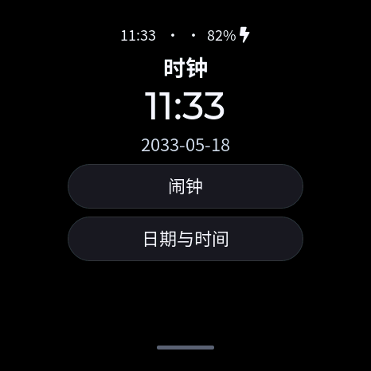
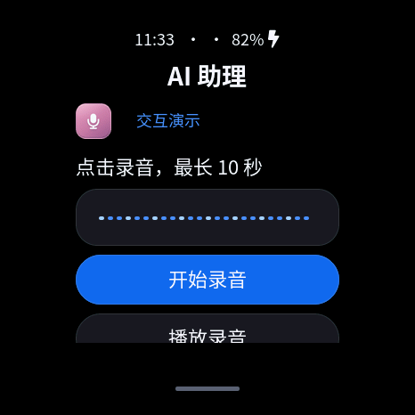

Blue 2.2 · 原生 LVGL 模拟器截图
应用全屏黑底，弹窗保留玻璃质感
应用直接占满 466 × 466 圆屏，没有居中外框或关闭按钮。蓝色操作与彩色图标保留，通过边缘手势返回、回首页和切换应用。截图使用模拟数据。
 计时器 · 全屏黑底
计时器 · 全屏黑底 设置 · 内容直接滚动
设置 · 内容直接滚动
时钟 · 实色操作
助理 · 演示标识保留临时覆盖层
确认与提醒保留柔化玻璃表面，遮罩阻断底层点击。设备使用离线材质近似模糊效果，不进行实时背景模糊。
 未保存确认 · 玻璃浮层
未保存确认 · 玻璃浮层 到点提醒 · 停止后恢复原页
到点提醒 · 停止后恢复原页尚未烧录设备；模拟器截图不代表真实 AMOLED 色彩、触控和帧率已验收。
构建与验收记录 · 交互规范